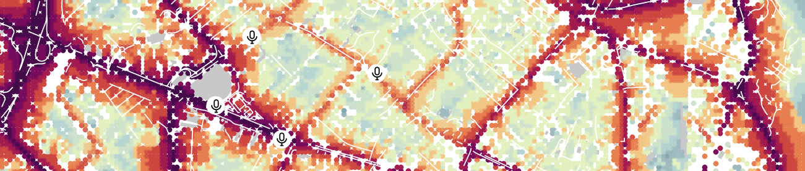
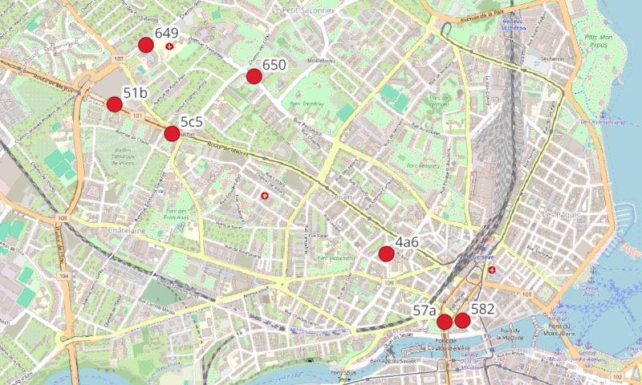
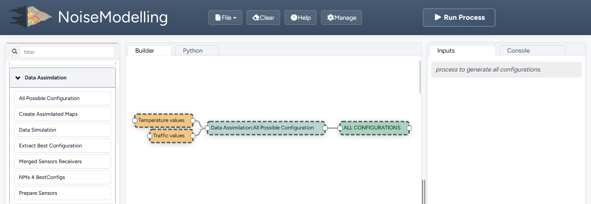
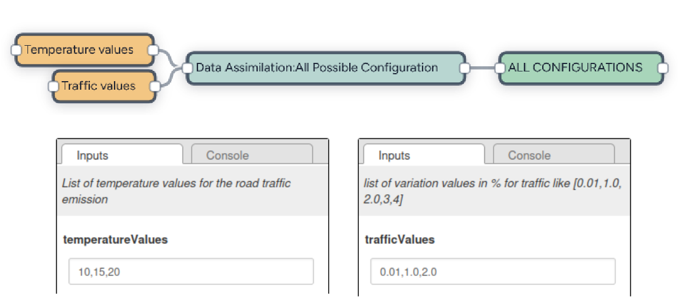
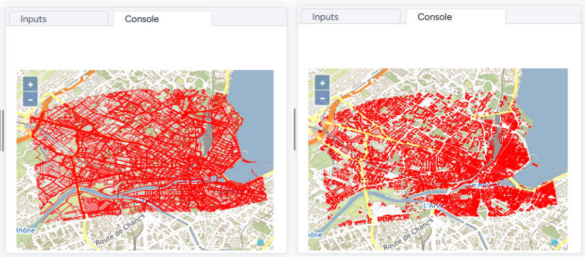
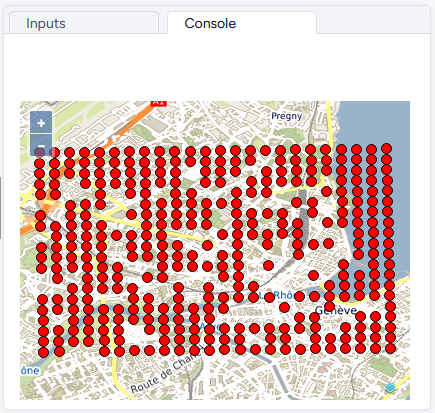
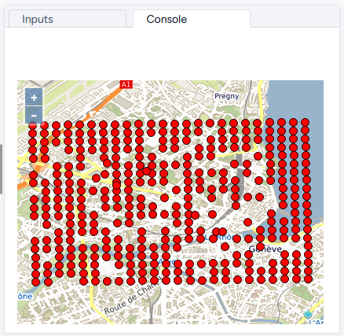
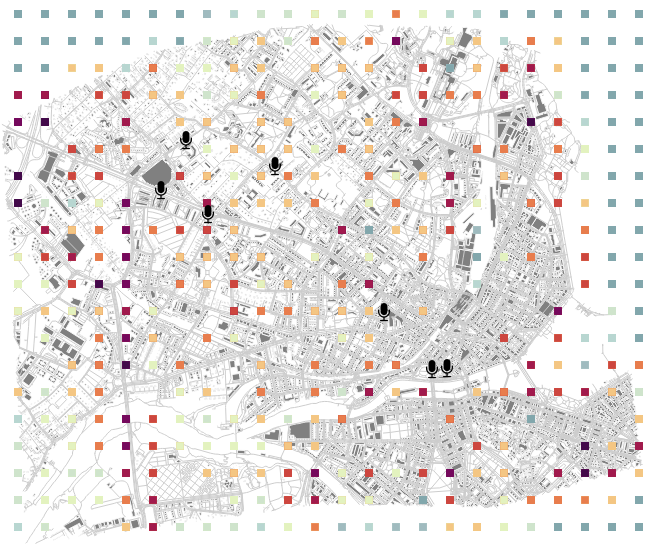
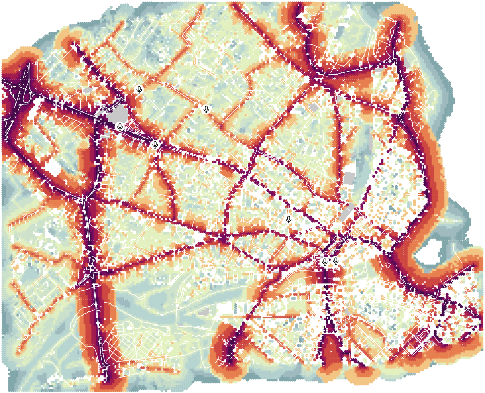

Data Assimilation

Introduction
Data assimilation is a technique that combines observations with a numerical model to improve the accuracy of forecasts or analyses. Applied to acoustics and noise maps, data assimilation makes it possible to integrate real noise measurements (e.g coming from sensors) into noise propagation models to produce more accurate and reliable noise maps.
In this tutorial, we will see how to model and simulate noise in Geneva 🇨🇭 using static (road network, buildings) and dynamic (traffic, temperature) data. The main objective is to combine measurements from sensors located in Geneva with acoustic simulations to identify traffic configurations that best match measurements.
Requirements
To play with this tutorial, you will need:
a working installation of NoiseModelling (NM) with at least version 5. If needed, get the last release on the official GitHub repository,
the tutorial’s datasets, stored in the folder
.../NoiseModelling/resources/dataAssimilation/,the dedicated Groovy scripts (Blocks), stored in the folder
.../NoiseModelling/scripts/DataAssimilation/.
The data
In the the tutorial’s folder, you have the following data:
sensor measurement
.csvfiles, stored in thedevices_data/folder (One file per sensor),
device_mapping_sf.geojsoncontaining two columns : the point geometry (THE_GEOM) and a sensor’s unique identifier (DEVEUI`). This file is also provided in.csvformat,the OpenStreetMap (OSM) dataset of the studied area :
geneva.osm.pbf.
Sensor measurements
Each .csv files in the folder devices_data/ contains environmental noise measurements recorded by individual sensors.
The columns are:
deveui: Unique identifier of the sensor,epoch: Time of measurement (Epoch format - Unix time, ex:1724567400),Leq: Equivalent continuous sound level in dB(A), calculated over a period (15 min),Temp: Temperature (°C) recorded by the sensor at the time of measurement,timestamp: Time of measurement (timestamp format"YYYY-MM-DD HH:MM:SS").
Below is an illustration with the file 4a6.csv. Here we can see that 5 measurements were taken, every 15 minutes, between 6:30 and 7:30 am. During this period, noise levels rose slightly, while temperatures remained stable overall (except for the first measurement).
deveui |
epoch |
Leq |
Temp |
timestamp |
|---|---|---|---|---|
4a6 |
1724567400 |
40.6 |
10.00 |
2024-08-25 06:30:00 |
4a6 |
1724568300 |
41.9 |
18.125 |
2024-08-25 06:45:00 |
4a6 |
1724569200 |
43.9 |
18.125 |
2024-08-25 07:00:00 |
4a6 |
1724570100 |
42.3 |
18.125 |
2024-08-25 07:15:00 |
4a6 |
1724571000 |
45.5 |
18.125 |
2024-08-25 07:30:00 |
Warning
In this tutorial all the values, coming from the 7 sensors, are sampled approximately every 15 minutes, but the exact spacing may vary slightly.
We could also have had data with a time step of 5 minutes, 10 minutes, 1 hour, etc.
In all cases, it is important that all the measurements from the sensors are set to the same time step AND that they are phased (i.e. set to the same time intervals).
Sensor localization
The device_mapping_sf.geojson columns are:
deveui: Unique Identifier of the sensor,the_geom: 3D point geometry in WKT (Well-Known Text) format — includes coordinates (X, Y) and altitude (Z) in the projected coordinate system.
Below is a map, showing the seven sensors (red points), with their identifier deveui.

How to compute the assimilation?
To compute the data assimilation, you will have to execute several Groovy scripts (Blocks). You can play with them in two ways:
with the NoiseModelling’s GUI (Graphic User Interface). In this case, the Blocks are listed in the
Data_Assimilationtab (see screenshot below),in command line (see how to NoiseModelling client line interface (CLI)). In this case, just note that they are stored in the folder
.../NoiseModelling_x.x.x/scripts/DataAssimilation/,in a Groovy script (Block), calling one or various Groovy scripts (Blocks).

Data Simulation
This process prepares the training dataset from sensor measurements, importing it into NoiseModelling (in a spatial database) and performing various calculations to determine noise levels.
Maps are generated with all possible combinations, in order to identify the best road configuration in terms of noise levels generated.
Step 1 : Generate all possible combinations
Generates all possible combinations of values from two given lists and inserts them into a table named ALL_CONFIGURATIONS.
To calculate the combinations, you have to execute the script All_Possible_Configuration.
Two input parameters are needed:
Traffic values (
trafficValues): variation around standard values for the 4 types of roads: primary, secondary, tertiary and others. When generating a variation of the default map (the set of maps), the values taken by the primary, the secondary, … sections, will be calculated from these parameters (between 1 and n). For example, if"trafficValues": "0.01, 1", then the primary sections will take 1% or 100% of their default value. The same applies to the remaining road types.Temperature values (
temperatureValues) : the temperatures (in °C - Double). The 1 to n possible temperatures to play (in the example below, 3 temperatures are defined: 10, 15 and 20°C)
Execute All_Possible_Configuration Block
With the NoiseModelling GUI

With command lines
1./bin/wps_scripts -w ./ -s scripts/Data_Assimilation/All_Possible_Configuration.groovy -trafficValues "0.01,1,2" -temperatureValues "10,15,20"
With Groovy script (Block)
new All_Possible_Configuration().exec(connection,[
"trafficValues": "0.01,1.0,2.0",
"temperatureValues": "10,15,20"
])
Result
The generated combinations include values for type of roads primary, secondary, tertiary, others, and temperature. The resulting table ALL_CONFIGURATIONS has the following columns:
IT: Unique identifier of the combination (Primary Key - Integer)PRIMARY_VAL: percentage of primary roads traffic, given by trafficValues (Double)SECONDARY_VAL: … of secondary roads … (Double)TERTIARY_VAL: … of tertiary roads …(Double)OTHERS_VAL: … of other roads …(Double)TEMP_VAL: temperature (Double)
The first 10 lines of this table are shown below:
IT |
PRIMARY_VAL |
SECONDARY_VAL |
TERTIARY_VAL |
OTHERS_VAL |
TEMP_VAL |
|---|---|---|---|---|---|
1 |
0.01 |
0.01 |
0.01 |
0.01 |
10 |
2 |
0.01 |
0.01 |
0.01 |
0.01 |
15 |
3 |
0.01 |
0.01 |
0.01 |
0.01 |
20 |
4 |
1.0 |
0.01 |
0.01 |
0.01 |
10 |
5 |
1.0 |
0.01 |
0.01 |
0.01 |
15 |
6 |
1.0 |
0.01 |
0.01 |
0.01 |
20 |
7 |
1.0 |
1.0 |
0.01 |
0.01 |
10 |
8 |
1.0 |
1.0 |
0.01 |
0.01 |
15 |
9 |
1.0 |
1.0 |
0.01 |
0.01 |
20 |
10 |
1.0 |
1.0 |
1.0 |
0.01 |
10 |
Warning
The total number of combinations can be huge. This value is defined as: (number of trafficValues elements) ^ 4 * (number of temperatureValues elements).
In our example, we have "trafficValues": "0.01, 1.0, 2.0" and "temperatureValues": "10,15,20", so the number of combinations = 3 ^ 4 * 3 = 243 (before filtration - see ‘note’ tab just below)
Even though this table is very important, only part of it will be used for all the maps to be simulated (see Step 5)
Note
When the combinations are calculated, a filter is applied to remove inconsistent pairs (e.g. an ‘other’ type road with much more traffic than a ‘primary’ road).
As a result, only pairs meeting the following rule are retained: traffic on a lower type of road / traffic on a higher type of road <= 20
This rule eliminates cases where a road of a lower type would have 20 times more traffic than another of a higher type.
Step 2 : Import sensor positions
Using the Import_File Block*, import the location of the sensors into the NoiseModelling’s database from the .geojson file device_mapping_sf.geojson. This file will be stored in a table called SENSORS_LOCATION.
* in the scripts/Import_and_Export/ folder
🌍 Since we are in the Geneva area, we are using the CH1903+ metric coordinate system (identified as EPSG:2056).
pathFile:./resources/dataAssimilation/device_mapping_sf.geojsoninputSRID:2056tableName:SENSORS_LOCATION
If you are using the Groovy script (Block)
new Import_File().exec(connection,[
"pathFile" : workingFolder+"device_mapping_sf.geojson",
"inputSRID" : 2056,
"tableName": "SENSORS_LOCATION"
])
Result
Once done, you have the table SENSORS_LOCATION, presented below.
THE_GEOM |
DEVEUI |
|---|---|
POINT Z(2499748.01396418 1118023.64763599 4) |
57a |
POINT Z(2497926.50847343 1119715.69600241 4) |
649 |
POINT Z(2499855.07784477 1118032.40228679 4) |
582 |
POINT Z(2497737.00785445 1119351.14658559 4) |
51b |
POINT Z(2499392.11210506 1118441.15233318 4) |
4a6 |
POINT Z(2498584.3443027 1119522.320612 4) |
650 |
POINT Z(2498084.77671566 1119172.90847018 4) |
5c5 |
Step 3 : Prepare sensor data
Now we can extract and prepare the sensors, for a given period. To do so, we are using the Prepare_Sensors Groovy script (Block) stored in the folder .../scripts/DataAssimilation/.
This script has the following parameters:
startDate: the start timestamp for the dataset extraction (in formatYYYY-MM-DD HH:MM:SS)endDate: the final timestamp for the dataset extraction (in formatYYYY-MM-DD HH:MM:SS)trainingRatio: define the percentage of data to be used for training (e.g a value of 0.7 means that 70% of the data will be used for training. The remaining 30% will be used for validation) (Double)workingFolder: folder containing the filedevice_mapping_sf.csv, the OSM file and thedevices_datafolder.targetSRID: Target projection identifier (also called SRID) of your project (Integer)
Execution
For this tutorial, you can fill with these informations:
Start time stamp (
startDate) :2024-08-25 06:30:00End time stamp (
endDate) :2024-08-25 07:30:00Training data percentage(
trainingRatio) :0.8Working directory path with input files (
workingFolder) :./resources/dataAssimilation/(enter the full URL e.g/home/myUserName/Documents/NoiseModelling/resources/dataAssimilation/)Target projection identifier (
targetSRID) :2056
If you are using the Groovy script (Block)
new Prepare_Sensors().exec(connection,[
"startDate":"2024-08-25 06:30:00",
"endDate": "2024-08-25 07:30:00",
"trainingRatio": 0.8,
"workingFolder": "./resources/dataAssimilation/",
"targetSRID": 2056
])
Result
Once executed, two tables are created:
SENSORS_MEASUREMENTS: representing all the data for this period, with sensor’s position (POINT geometry)SENSORS_MEASUREMENTS_TRAINING: filteringSENSORS_MEASUREMENTSto keep only the training dataset. This table (described below) will be used as the RECEIVER table for the following steps.IDSENSOR: Unique identifier of the sensor,THE_GEOM: The sensor’s position (POINT geometry),IDRECEIVER: The receiver’s unique IdEPOCH: Time of measurement (Epoch format - Unix time, ex:1724567400),LAEQ: Equivalent continuous sound level in dB(A), calculated over a period (15 min),TEMP: Temperature (°C) recorded by the sensor at the time of measurement.
Step 4: Import buildings and roads
Now, using the Import_OSM Block, you can import buildings and road network (with predicted traffic flows) from the geneva.osm.pbf OSM file.
Execution
Path of the OSM file (
pathFile):./resources/dataAssimilation/geneva.osm.pbfTarget projection identifier (
targetSRID):2056Do not import Surface acoustic absorption (
ignoreGround):trueRemove tunnels from OSM data (
removeTunnels):true
The other parameters are left as default
If you are using the Groovy script (Block)
new Import_OSM().exec(connection, [
"pathFile" : "./resources/dataAssimilation/geneva.osm.pbf",
"targetSRID" : 2056,
"ignoreGround" : true,
"removeTunnels" : true
])
Result
The tables BUILDINGS and ROADS are created.
Note
If you are using NoiseModelling with the GUI and wish to visualize the data in a map, you can use the Table_Visualization_Map Block. Below is the result with the two table BUILDINGS (left) and ROADS (right).

Step 5 : Generate all traffic emissions and maps
This step consists in generating all the traffic emissions by modifying traffic data according to the road type, using data from ALL_CONFIGURATIONS (see Step 1).
1. Generate emissions
To do so, users have first to execute the Data_Simulation Block, which has only one optional parameter :
noiseMapLimit: final number of maps to be generated (%). If a value is filled, a random selection is applied to keep the percentage(%) of expected maps, based on the LHS (Latin Hypercube Sampling) method.
Execution
For this tutorial, you can fill with this information:
noiseMapLimit:80
If you are using the Groovy script (Block)
new DataSimulation().exec(connection,[
"noiseMapLimit": 80
])
Result
Two tables are created:
LW_ROADS: table containing all traffic emissionsROADS_GEOM: table containing the geometry of roads
2. Calculate noise levels
Now, users can calculate the noise levels, emitted from the road sources. To do so, execute the Noise_level_from_source Block.
Execution
For this tutorial, you can fill with this information:
Source geometry table name (
tableSources):ROADS_GEOMSource emission table name (
tableSourcesEmission):LW_ROADSBuildings table name (
tableBuilding):BUILDINGSReceivers table name (
tableReceivers):SENSORS_LOCATION,Separate receiver level by source id (
confExportSourceId):falseMaximum source-receiver distance (
confMaxSrcDist):250Diffraction on vertical edges (
confDiffVertical):falseDiffraction on horizontal edges (
confDiffHorizontal):false
If you are using the Groovy script (Block)
new Noise_level_from_source().exec(connection, [
"tableSources": "ROADS_GEOM",
"tableSourcesEmission" : "LW_ROADS",
"tableBuilding": "BUILDINGS",
"tableReceivers": "SENSORS_LOCATION",
"confExportSourceId": false,
"confMaxSrcDist": 250,
"confDiffVertical": false,
"confDiffHorizontal": false
])
Result
The table RECEIVERS_LEVEL is created and stores all the generated maps (see the three first lines below - you can scroll the table to the right).
IDRECEIVER |
PERIOD |
THE_GEOM |
HZ63 |
… |
HZ8000 |
LAEQ |
LEQ |
|---|---|---|---|---|---|---|---|
1433 |
344 |
SRID=2056;POINT Z (2496912.2844730876 1116884.1525357629 4) |
44.601295 |
14.591279 |
38.107693 |
46.40716 |
|
1433 |
448 |
SRID=2056;POINT Z (2496912.2844730876 1116884.1525357629 4) |
46.617485 |
15.979266 |
40.203373 |
48.37574 |
|
1433 |
648 |
SRID=2056;POINT Z (2496912.2844730876 1116884.1525357629 4) |
46.617485 |
15.979266 |
40.203373 |
48.37574 |
Step 6 : Extract best configuration
Many maps have been generated. So now, the best map, minimizing the difference between the measurements and the simulation, must be chosen.
To do so, users have to execute the Extract_Best_Configuration script. There are 3 parameters to enter here:
Measurement table (
observationTable): name of the table where observed data are stored,Noise map table (
noiseMapTable): name of the table where simulated data are stored,Temperature tolerance threshold (
tempToleranceThreshold): tolerance threshold (expressed in °C) for the temperature that allows to extract the map that have a temperature value close to the real temperature.
This process will:
first determine the LAEQ difference between simulated (
noiseMapTable) and observed (observationTable) values,then calculate, for each time steps and for all maps, the median value of the difference between the two values. The map having the smallest median value will be the best one.
Execution
For this tutorial, you can fill with this information:
observationTable:SENSORS_MEASUREMENTS_TRAININGnoiseMapTable:RECEIVERS_LEVELtempToleranceThreshold:5
If you are using the Groovy script (Block)
new Extract_Best_Configuration().exec(connection,[
"observationTable": "SENSORS_MEASUREMENTS_TRAINING",
"noiseMapTable": "RECEIVERS_LEVEL",
"tempToleranceThreshold" : 5
])
Result
Note
The best configuration is found for each time step (here 15 minutes)
As a result, the BEST_CONFIGURATION_FULL table is created (see table below). This table is made of the following columns:
EPOCH: Time of measurement (Epoch format - Unix time, ex:1724567400),MIN_MEDIAN_DIFF: the minimum median of the difference between simulated and measured LAEQs (this is how the best maps are chosen)IT: Unique identifier of the combination (Primary Key - Integer)PRIMARY_VAL: percentage of primary roads traffic, given bytrafficValues(Double)SECONDARY_VAL: … secondary roads …TERTIARY_VAL: … tertiary roads …OTHERS_VAL: … other roads …TEMP_VAL: temperature (Integer)
EPOCH |
MIN_MEDIAN_DIFF |
IT |
PRIMARY_VAL |
SECONDARY_VAL |
TERTIARY_VAL |
OTHERS_VAL |
TEMP_VAL |
|---|---|---|---|---|---|---|---|
1724567400 |
9.3827 |
366 |
2.8 |
2.8 |
0.01 |
0.2 |
10 |
1724569200 |
11.2629 |
577 |
3.0 |
0.2 |
3.0 |
0.2 |
15 |
1724570100 |
11.2 |
577 |
3.0 |
0.2 |
3.0 |
0.2 |
15 |
1724571000 |
11.625 |
577 |
3.0 |
0.2 |
3.0 |
0.2 |
15 |
1724568300 |
11.1953 |
679 |
3.0 |
3.0 |
0.2 |
0.2 |
25 |
1724569201 |
7.8047 |
679 |
3.0 |
3.0 |
0.2 |
0.2 |
25 |
1724569202 |
10.3047 |
679 |
3.0 |
3.0 |
0.2 |
0.2 |
25 |
Execute Simulation: Generate the Dynamic Map
This part is made to execute a dynamic traffic calibration process, using the best configuration.
Step 7 : Generate new receivers
Create a regular grid of receivers between the buildings.
To do so, use the Regular_Grid script (in the /Receivers/ scripts folder).
Execution
For this tutorial, you can fill with this information:
Buildings table name (
buildingTableName):BUILDINGSTable bounding box name (
fenceTableName):BUILDINGSSource table name (
sourcesTableName):ROADSOffset (
delta):200(1 receiver every 200m)
If you are using the Groovy script (Block)
new Regular_Grid().exec(connection,[
"buildingTableName": "BUILDINGS",
"fenceTableName": "BUILDINGS",
"sourcesTableName":"ROADS",
"delta": 200
])
Result
The table RECEIVERS is created.
THE_GEOM |
ID_COL |
ID_ROW |
PK |
|---|---|---|---|
POINT Z(2496682.2844730876 1116854.1525357629 4) |
1 |
1 |
1 |
POINT Z(2496882.2844730876 1116854.1525357629 4) |
2 |
1 |
2 |
POINT Z(2497482.2844730876 1116854.1525357629 4) |
5 |
1 |
5 |
{kind=link}

Step 8 : Adding sensors as receivers
Optionally, add the sensors location into the RECEIVERS table (just created before).
Execution
In the Merged_Sensors_Receivers Block, fill these information:
The receiver table (
tableReceivers):RECEIVERSThe sensors table (
tableSensors):SENSORS_LOCATION
If you are using the Groovy script (Block)
new Merged_Sensors_Receivers().exec(connection,[
"tableReceivers": "RECEIVERS",
"tableSensors" : "SENSORS_LOCATION"
])
Result
The RECEIVERS table has now new points, the sensor’s one
{kind=link}

Step 9 : Generate dynamic road emissions
For each time step (here 15 min), generate an emissions map for all the receivers, corresponding to the best configuration (for this time step).
To do so, use the NMs_4_BestConfigs Block. This Block has two inputs:
The best configuration table (
bestConfig)The road emission table (
roadEmission)
Execution
bestConfig:BEST_CONFIGURATION_FULLroadEmission:LW_ROADS
If you are using the Groovy script (Block)
new NMs_4_BestConfigs().exec(connection)
"bestConfig": "BEST_CONFIGURATION_FULL",
"roadEmission" : "LW_ROADS"
Result
The table LW_ROADS_best is created, with the following structure:
PK: Unique IdentifierIDSOURCE: Source idPERIOD: timeHZ63: noise level for the 63 HZ frequency bandHZ125: … for 125 HZ …HZ250: … for 250 HZ …HZ500: … for 500 HZ …HZ1000: … for 1000 HZ …HZ2000: … for 2000 HZ …HZ4000: … for 4000 HZ …HZ8000: … for 8000 HZ …
Step 10 : Generate the noise levels
Using the Noise_level_from_source Block, we can finally compute the noise level from the network sources emission (LW_ROADS_best) based on all the receivers.
Execution
Source geometry table name (
tableSources):ROADS_GEOMSource emission table name (
tableSourcesEmission):LW_ROADS_bestBuildings table name (
tableBuilding):BUILDINGSReceivers table name (
tableReceivers):RECEIVERSSeparate receiver level by source id (
confExportSourceId):falseMaximum source-receiver distance (
confMaxSrcDist):250Diffraction on vertical edges (
confDiffVertical):falseDiffraction on horizontal edges (
confDiffHorizontal):false
If you are using the Groovy script (Block)
new Noise_level_from_source().exec(connection, [
"tableSources": "ROADS_GEOM",
"tableSourcesEmission" : "LW_ROADS_best",
"tableBuilding": "BUILDINGS",
"tableReceivers": "RECEIVERS",
"confExportSourceId": false,
"confMaxSrcDist": 250,
"confDiffVertical": false,
"confDiffHorizontal": false
])
Result
We obtain the table RECEIVERS_LEVEL.
Step 11 : Create & visualize the resulting table
Create a table, called ASSIMILATED_MAPS, containing both sound levels and configuration parameters.
To do so, execute the Create_Assimilated_Maps Block, with the 3 following parameters:
bestConfigTable: the best configuration table namereceiverLevel: the receivers level table nameoutputTable: the output table name
Execution
For this tutorial, you can fill with this information:
bestConfigTable:BEST_CONFIGURATION_FULLreceiverLevel:RECEIVERS_LEVELoutputTable:ASSIMILATED_MAPS
new Create_Assimilated_Maps().exec(connection,[
"bestConfigTable" : "BEST_CONFIGURATION_FULL",
"receiverLevel" : "RECEIVERS_LEVEL",
"outputTable": "ASSIMILATED_MAPS"
])
Result
The resulting ASSIMILATED_MAPS table has the following columns:
TIMESTAMP: time of the measureLAEQ: noise level (dB(A))THE_GEOM: receiver’s geometry (POINT)IDRECEIVER: receiver’s unique identifier
TIMESTAMP |
LAEQ |
THE_GEOM |
IDRECEIVER |
|---|---|---|---|
1724567400 |
38.16436 |
SRID=2056;POINT Z (2496912.2844730876 1116884.1525357629 4) |
1433 |
1724567400 |
39.29134 |
SRID=2056;POINT Z (2496912.2844730876 1116864.1525357629 4) |
1197 |
1724567400 |
42.9573 |
SRID=2056;POINT Z (2496912.2844730876 1116844.1525357629 4) |
961 |
Visualize the map
You can now export the ASSIMILATED_MAPS table, for example as a Shapefile, using the Export_Table Block and then import it into your favorite GIS app (such as QGIS) to visualize the results.
exportPath:results/ASSIMILATED_MAPS.shptableToExport:ASSIMILATED_MAPS
or
new Export_Table().exec(connection,
["exportPath": "results/ASSIMILATED_MAPS.shp",
"tableToExport": "ASSIMILATED_MAPS"
])
The resulting map may looks like this:

Legend: Here, we applied the color scheme proposed by Beate Tomio (see Noise Map Color Scheme) on the column LAEQ. We also added the input sensors, the buildings (medium grey) and the roads (light grey).
Remark: In this example, we have chosen to have a receiver every 200m (see Step 7). To achieve a denser rendering, we could have made the receiver grid denser. Below is an example, on the same area, but with a 20m grid.
